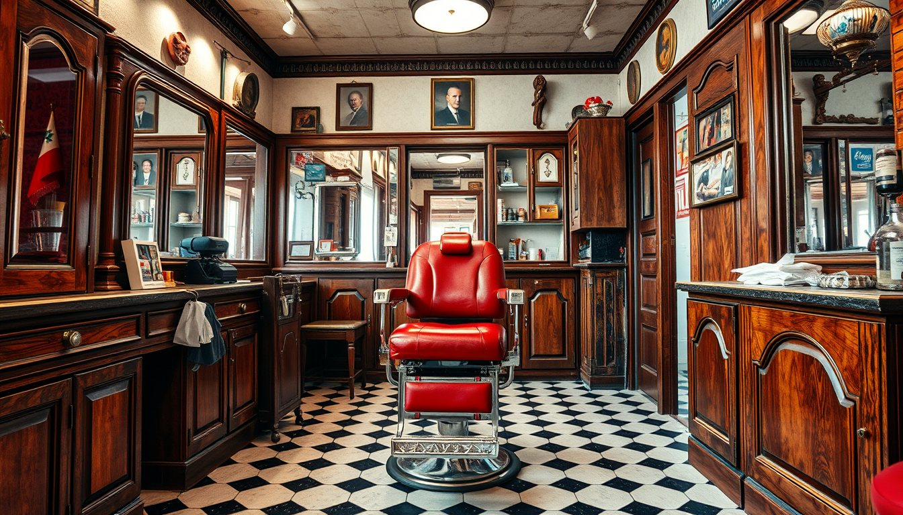
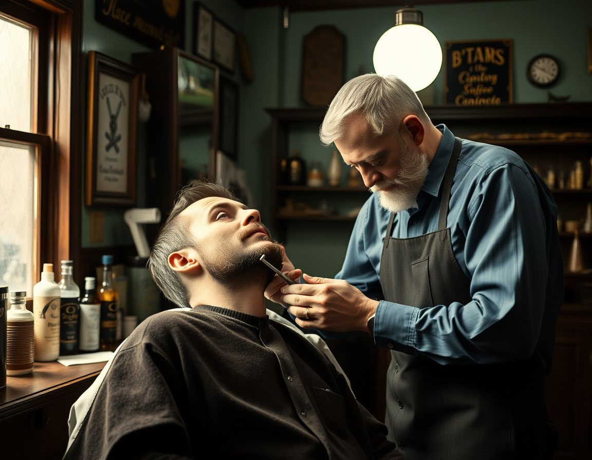
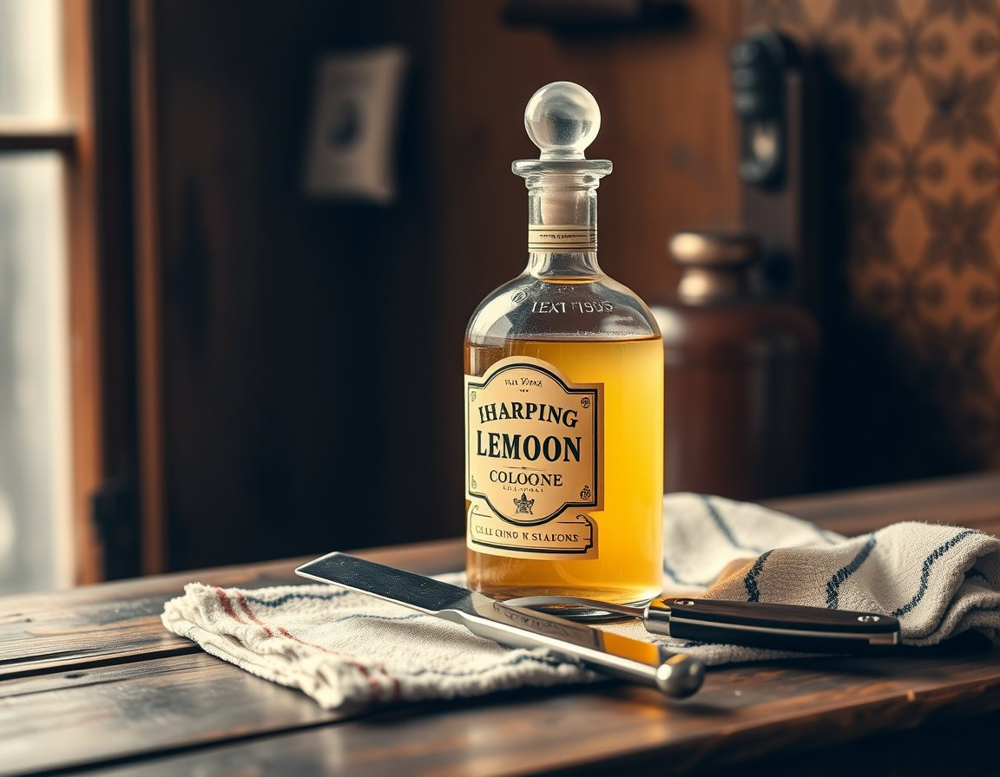
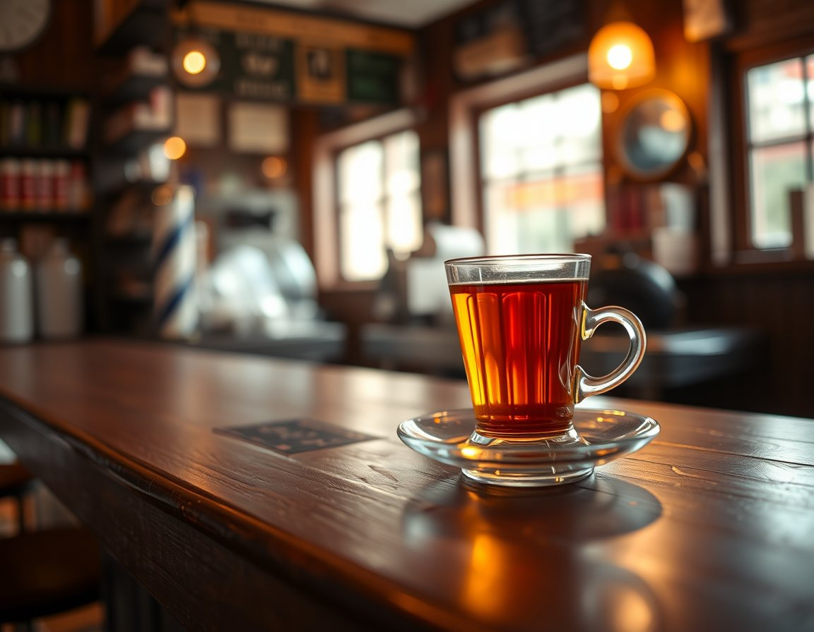

Usta Hasan 1978'de bu dükkânı açtığında bir koltuk, bir ayna ve bir makası vardı. Bugün koltuk sayısı üç oldu; kolonya ve çay hiç değişmedi.

Randevu yok, sıra var. Sıra beklerken çay bizden. Fiyatlar örnektir.
“Makas eline alışır evlat. Kırk yıl oldu, hâlâ her kafaya ilk kez kesiyormuş gibi bakarım.”
— Usta Hasan
Bugün dükkânda Hasan Usta'nın yanında oğlu Mehmet ve çırak Yusuf çalışıyor. Klasik kesimlerden ince bıyık düzeltmeye kadar hepsi el işi.

Her ustura tıraşından önce, buharda ısıtılmış havlu.

Tıraş sonrası avuca, eski usul.

Sıra beklerken, gazete yanında.
Randevu almıyoruz; gelin, sıraya girin. Acil bir düğün tıraşı için arayabilirsiniz.
0258 000 00 00